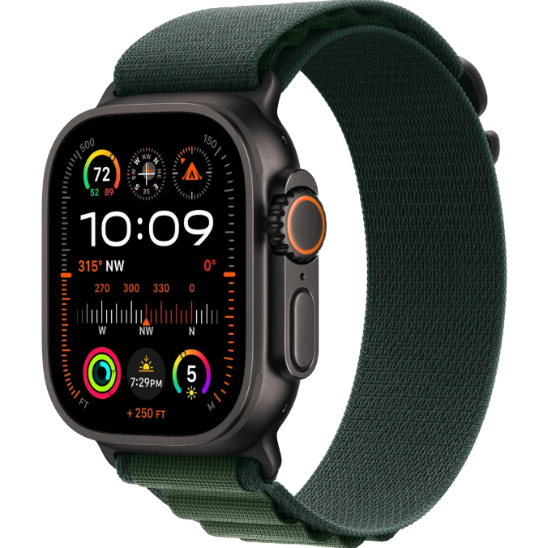
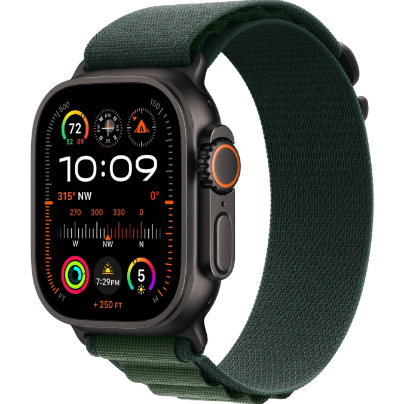

TAZROTCH
MENU


 

RESISTANT
CS-500
The conceptual 176 CS-500 smartwatch has been designed by cart huser as an ultra modren. Industrail take on wearable technology that merges aesthetics to achieve a stylish piece of equipment.
$740.00
CONCEPT
The wearable follows on the designer's experiences using the Apple Watch before switching to a Casio watch and boasts a hybird design that includes physical controls alongside smart features. The wearable thus features a square case with industrial accents like visible screws, while vents on the side indicates the smartwatch has a built-in speaker and/or microphone.